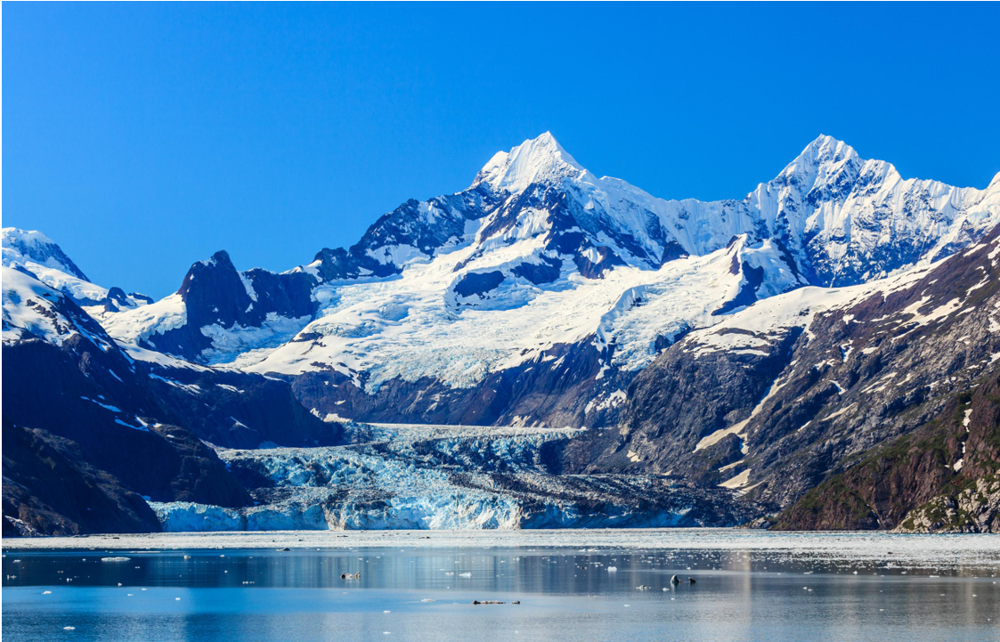
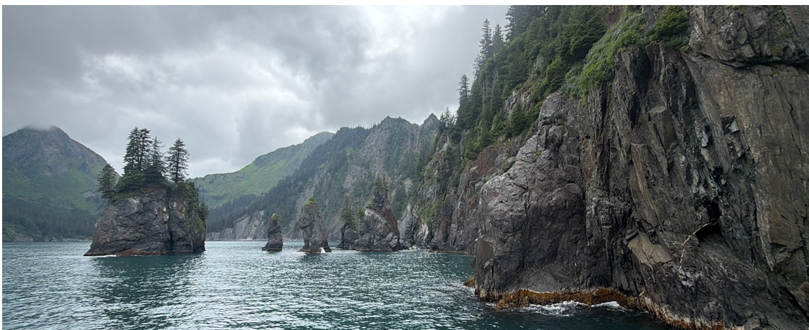
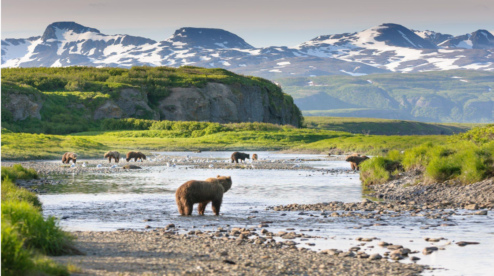
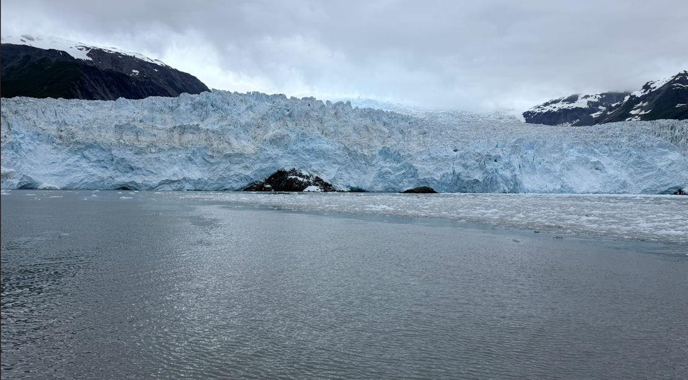
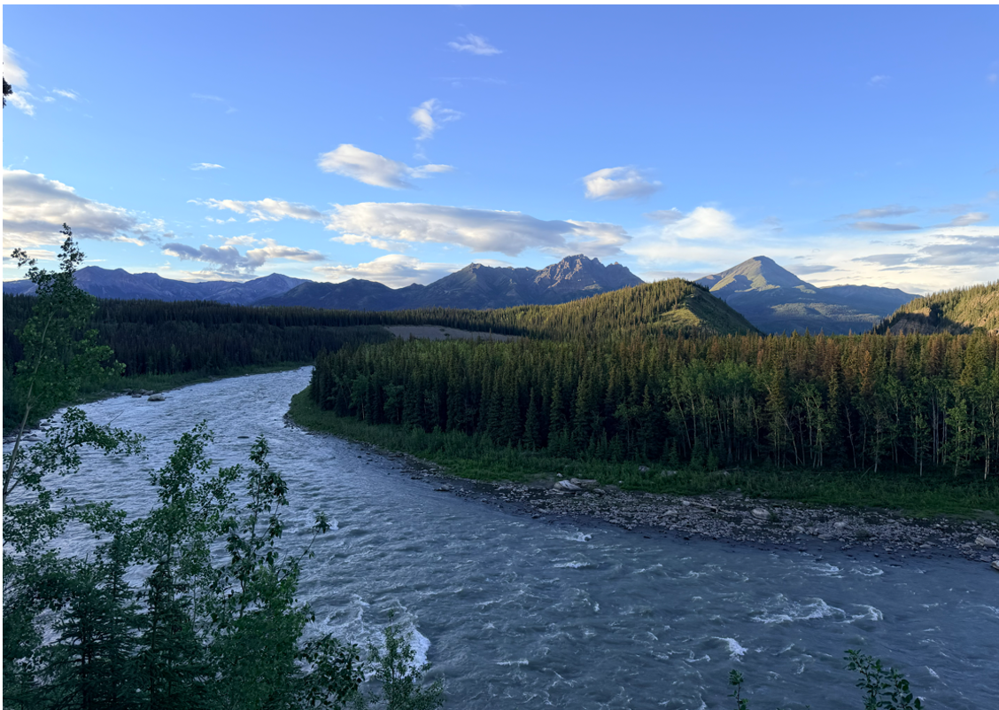

Alaska: The Land of Adventure
Discover breathtaking landscapes, amazing wildlife, glaciers, and unforgettable outdoor adventures across Alaska.

Discover Alaska
Mountains and Wilderness

Explore Alaska's dramatic mountains, forests, tundra, and wilderness. Kenai Fjords National Park contains about 600,000 acres of pristine wilderness, including glaciers, fjords, forests, abundant wildlife, and diverse marine life.
Wildlife

Alaska is home to many species of wildlife. Visitors may encounter bears, moose, caribou, wolves, and Dall's sheep.
Glaciers

Discover Alaska's glaciers and explore the dramatic landscapes created by ice, mountains, and water.Denali National Park

Denali National Park is one of Alaska's popular destinations. The park offers beautiful mountain scenery, wilderness, and opportunities to experience Alaska's natural environment.
Learn more about Denali by visiting the National Park Service Denali website
Kenai Fjords National Park Glaciers
Alaska offers many exciting outdoor activities. Visitors can enjoy hiking, sightseeing, dog sledding, glacier viewing, and exploring scenic landscapes and waterfalls.
Popular Activities
- Hiking
- Dog sledding
- Glacier viewing
- Wildlife viewing
- Sightseeing
Wildlife Viewing
Wildlife viewing is an exciting way to experience Alaska. Visitors may see bears, moose, and other animals while exploring the state's natural habitats.
Families and nature lovers can enjoy learning about Alaska's wildlife while exploring its beautiful outdoor environments.
Travel Resources
First-time visitors can research Alaska's destinations, activities, transportation, and national parks before planning their trip.
Visit Travel Alaska to learn more about traveling around the state.
Ready to Explore Alaska?
Start planning your Alaska adventure and discover beautiful landscapes, amazing wildlife, glaciers, and exciting outdoor activities.